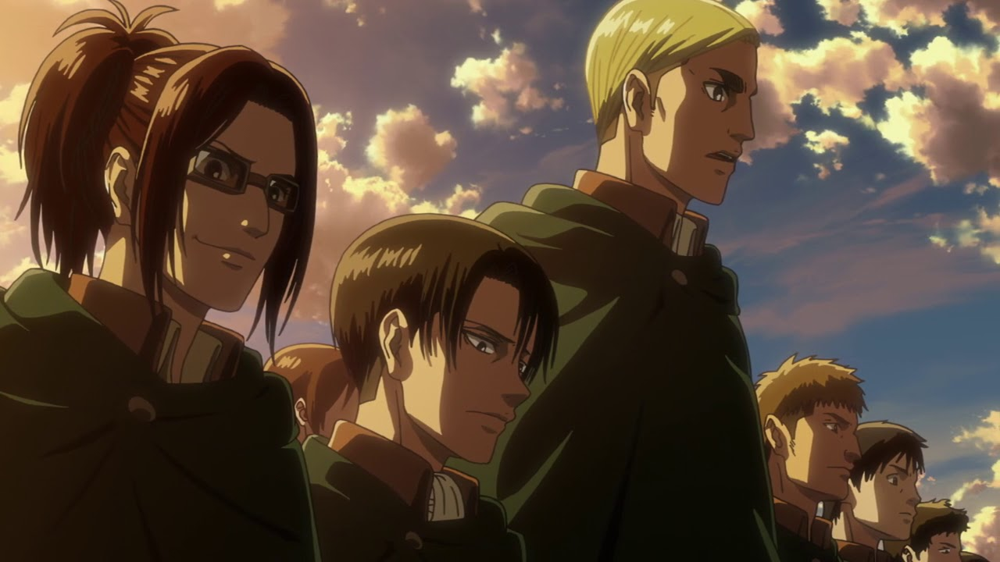

About Erwin
Erwin is the best character in Attack on Titan. He is the commander for the Scount Legion.
Erwin with his two top captains, Hange and Levi.
Erwin's Achievements
- Became the commander of the Scount Legion
- Lead the capture of the Female Titan
- Gave his life at the battle of Shiganshina against the Beast Titan, The Collosal Titan & The Armored Titan
Erwin's soldiers
Erwin has some awesome soldiers and friends. Click on the links below to read more about them!